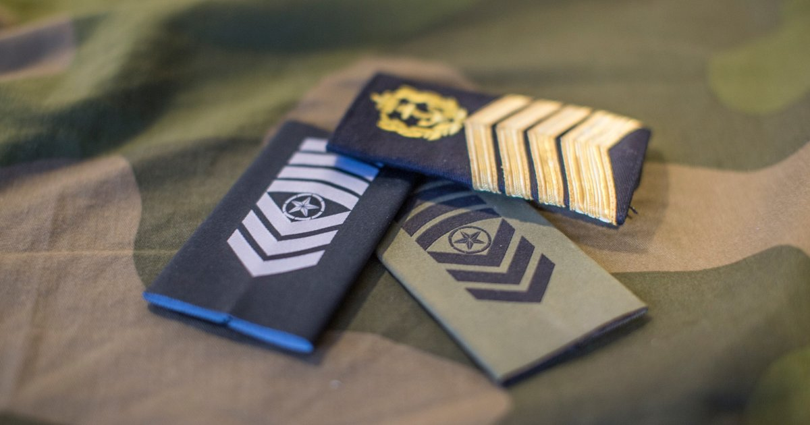
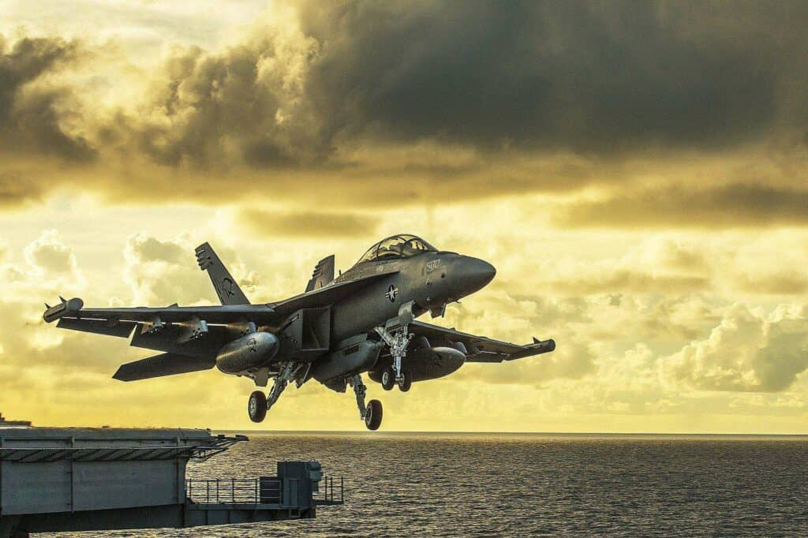
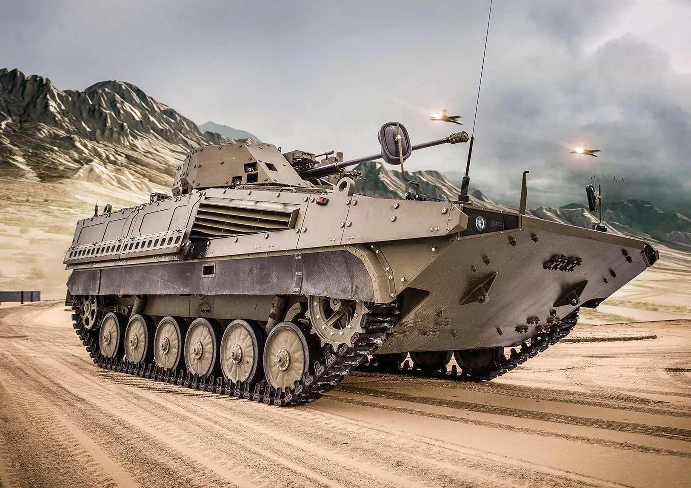
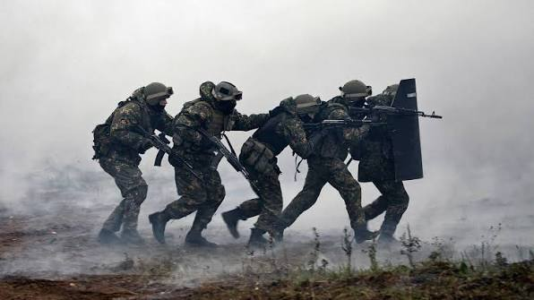

THE GLOBAL DEFENSE ENCYCLOPEDIA
EXPLORE THE WORLD
OF MILITARY AND DEFENSE
Discover the world's armed forces, military units, weapons, aircraft, vehicles, hunting equipment, and military history — all in one place.
KNOWLEDGE. CONTEXT. PERSPECTIVE.
A clearer view of defense, technology, and history.
INDEPENDENT KNOWLEDGE FOR THE CURIOUSEXPLORE THE DATABASE
A WORLD OF KNOWLEDGE
Choose a subject to explore its dedicated section of the Military Base encyclopedia.
01COUNTRIES & ORGANIZATIONWorld MilitariesArmed forces around the world, their branches, equipment, organization, and history.Explore section ↗
02PEOPLE & FORMATIONSMilitary UnitsPublicly documented units from countries around the world.Explore section ↗

03INSIGNIA & HIERARCHYMilitary RanksRank structures, insignia, and comparisons, including the Serbian Armed Forces.Explore section ↗ 04SYSTEMS & SMALL ARMSWeaponsA reference to firearm models and weapon systems, from pistols and rifles to larger platforms.Explore section ↗
05AIRCRAFT & TECHNOLOGYMilitary AviationFighters, bombers, transports, helicopters, trainers, and drones.Explore section ↗
06VEHICLES & ARTILLERYLand SystemsTanks, armored vehicles, artillery, transport, and air defense.Explore section ↗ 07FLEETS & MARITIME POWERNaval ForcesAircraft carriers, submarines, surface fleets, naval aviation, and the forces behind them.Explore section ↗ 08FIELDCRAFT & OUTDOORSHuntingHunting equipment, optics, outdoor traditions, and wildlife — a dedicated subject, separate from Weapons.Explore section ↗ 09PEOPLE, EVENTS & TECHNOLOGYMilitary HistoryBattles, historic uniforms, technology, and events that shaped the past.Explore section ↗FIELD ARCHIVE
TRAINING & SERVICE
Additional photographs from the local military image archive.
